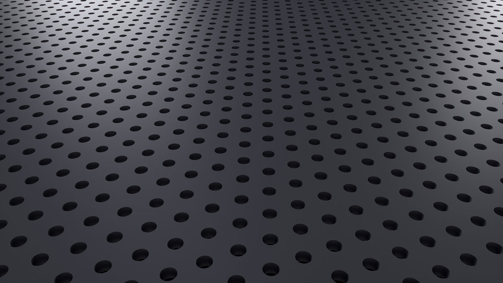

NGS 나노웰 기판
NGS Nanowell Substrate
나노임프린트 공정으로 특수 광학 유리 기판 위에 정밀한 나노웰 어레이를 구현합니다. 규칙적으로 배열된 웰마다 DNA 단편이 고정되어 수백만 개의 클러스터로 증폭되며, 인접 웰 간 신호 크로스토크를 억제해 시퀀싱 정확도를 크게 높입니다. 2세대 NGS 패턴드 플로우셀의 핵심 부품입니다.
- 웨이퍼
- 8 / 6 / 4인치
- 홀 직경
- 100 nm 이상
- 종횡비
- 5 : 1
- 기판
- 특수 광학 유리
기판 공급을 기본으로, 친수·소수 표면 처리와 본딩은 고객 지정 공정으로 대응합니다.
이 제품 문의하기